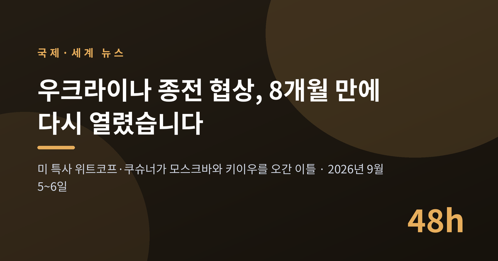
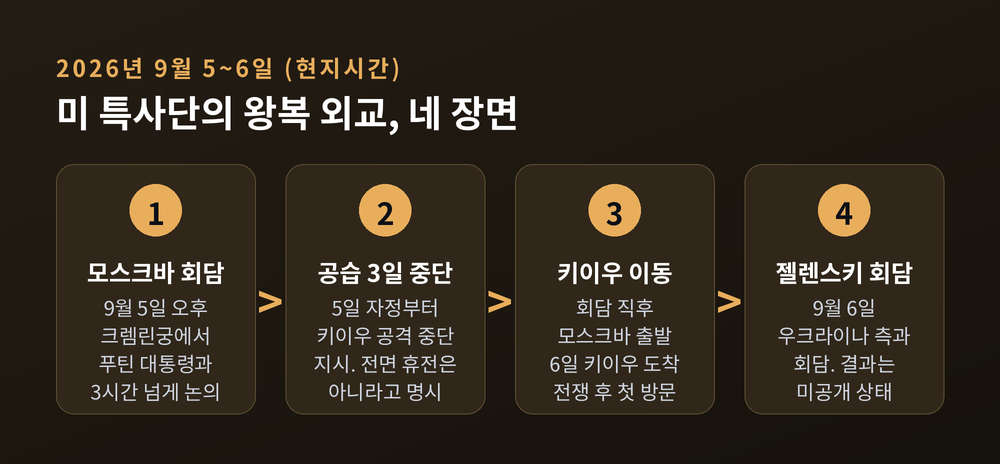
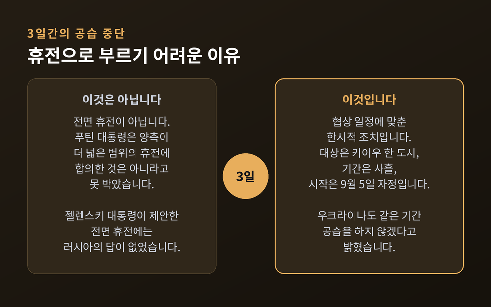
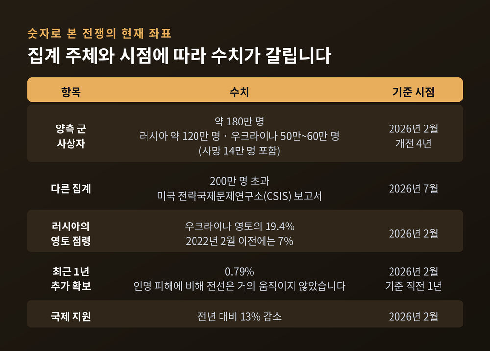
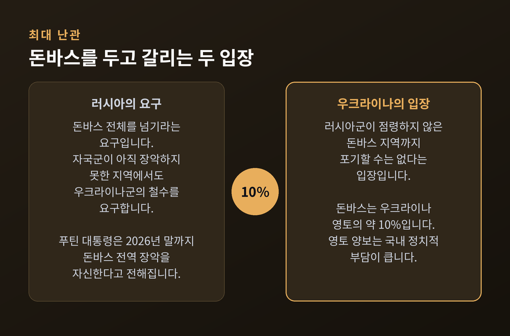
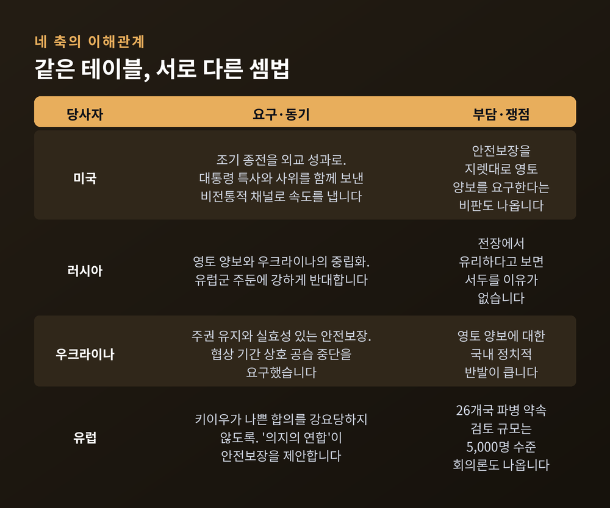
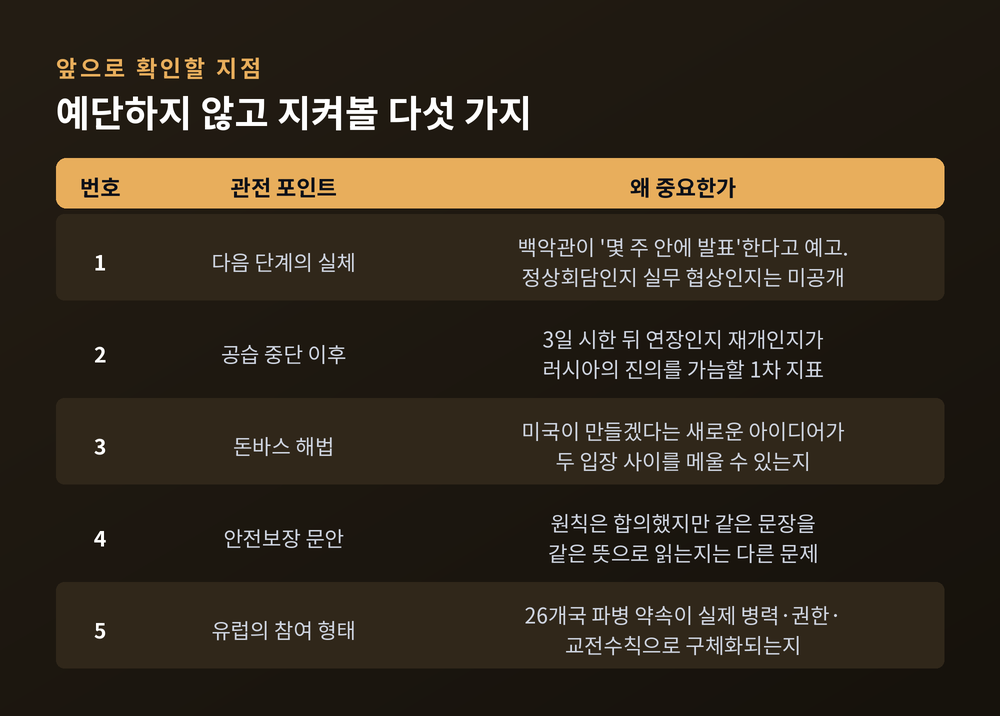

우크라이나 종전 협상 재개, 미 특사단이 모스크바와 키이우를 오간 이틀

이번 글에서는 2026년 9월 5일과 6일, 이틀 사이에 벌어진 미국 특사단의 왕복 외교를 정리해 보겠습니다. 모스크바에서 푸틴 대통령을 만나고, 하루 만에 키이우로 넘어가 젤렌스키 대통령을 만난 일정입니다. 사실관계와 쟁점을 차례로 짚겠습니다.
세 줄 요약
- 스티브 위트코프 미 대통령 특사와 재러드 쿠슈너가 9월 5일 크렘린궁에서 푸틴 대통령과 3시간 넘게 회담했고, 다음 날 키이우에서 젤렌스키 대통령을 만났습니다.
- 러시아는 회담을 "매우 유익했다"고 평가했고 백악관은 "실질적인 계획"을 논의했다고 밝혔습니다. 다만 양측 모두 내용은 공개하지 않았고, 돌파구가 열렸다는 징후는 확인되지 않았습니다.
- 푸틴 대통령은 특사단 방문에 맞춰 키이우 공습을 3일간 중단하도록 지시했습니다. 그러나 이는 전면 휴전이 아니며, 전선의 전투는 계속됩니다.
■이틀 동안 무슨 일이 있었나
시작은 9월 5일 토요일 오후 모스크바였습니다.
스티브 위트코프 미국 대통령 특사와 재러드 쿠슈너가 크렘린궁에서 블라디미르 푸틴 러시아 대통령을 만났습니다. 쿠슈너는 도널드 트럼프 대통령의 맏사위입니다. 회담은 3시간을 넘겼습니다. 이 시간에 대해서는 국내외 매체 보도가 일치합니다.
두 사람은 트럼프 대통령이 마련한 종전안을 들고 갔습니다. 트럼프 대통령은 특사들이 "전쟁을 끝낼 제안"을 가지고 간다고 말했고, 성사될 좋은 기회가 있을지 모른다는 기대도 함께 내비쳤습니다.
회담 뒤 나온 표현은 부드러웠습니다. 유리 우샤코프 크렘린궁 보좌관은 논의가 실질적이고 건설적이었으며 신뢰의 분위기에서 진행됐다고 밝혔습니다. 백악관도 미국 대표단이 종전 협상의 다음 단계를 위한 "실질적인 계획"을 논의했다고 전했습니다.
문제는 그 다음입니다. 양측 모두 회담의 구체적인 내용을 내놓지 않았습니다. 국내 매체들이 "돌파구 징후 없어", "러시아 요지부동" 같은 제목을 단 이유입니다.
특사단은 회담 직후 모스크바를 떠났습니다. 그리고 9월 6일 일요일, 키이우에 도착했습니다. 두 사람이 전쟁 발발 이후 우크라이나 수도를 찾은 것은 이번이 처음입니다.
젤렌스키 대통령은 회담에 앞서 이렇게 말했습니다. "평화가 필요하고, 안전보장이 필요하며, 전후 평화가 존엄한 성격을 갖는 것이 필요합니다. 우리의 제안은 준비되어 있습니다." 회담 결과는 이 글을 쓰는 시점까지 공개되지 않았습니다.

■3일간의 공습 중단, 무엇이고 무엇이 아닌가
이번 일정에서 가장 눈에 띈 조치는 공습 중단입니다.
푸틴 대통령은 키이우에 대한 공격을 3일간 멈추도록 지시했습니다. 시작 시점은 9월 5일 토요일 자정이었습니다. 미 대표단의 우크라이나 방문 일정에 맞춘 조치입니다.
여기까지만 보면 상당한 진전으로 읽힙니다. 하지만 푸틴 대통령은 같은 자리에서 선을 그었습니다. 양측이 더 넓은 범위의 휴전에 합의한 것은 아니라는 점을 분명히 했습니다.
우크라이나도 상응 조치를 취했습니다. 젤렌스키 대통령은 협상 기간에 우크라이나도 공습을 하지 않겠다고 밝히면서 러시아에 같은 조치를 요구했습니다. 결과적으로 양측이 상대 수도에 대한 타격을 잠시 멈춘 셈입니다.
다만 젤렌스키 대통령이 특사단의 모스크바 방문에 맞춰 제안한 전면 휴전에는 러시아의 답이 없었습니다.
정리하면 이렇습니다. 이번 조치는 휴전이 아니라 협상 일정에 맞춘 한시적 조치입니다. 대상은 키이우 한 도시, 기간은 사흘입니다. 그 바깥의 전선에서는 전투가 이어집니다.

■왜 지금 다시 열렸나 — 8개월의 공백
이번 방문이 주목받은 데는 이유가 있습니다. 미 종전 협상단이 러시아와 우크라이나를 직접 찾은 것이 약 8개월 만이기 때문입니다.
앞선 트랙을 잠깐 되짚겠습니다. 러시아와 우크라이나는 미국 중재로 2026년 1~2월 아부다비와 제네바에서 세 차례 직접 협상을 벌였습니다. 그 이전에는 2025년 12월 플로리다, 2026년 1월 파리에서 논의가 이어졌습니다.
그러나 전쟁을 끝낼 만한 합의는 나오지 않았습니다. 이후 협상은 사실상 멈췄습니다. 모스크바와 키이우 모두 2월 말 시작된 이란 관련 분쟁에 워싱턴의 관심이 쏠린 점을 이유로 지목했습니다.
예전에는 협상 테이블 자체가 자주 차려졌습니다. 지금은 그 테이블을 다시 놓는 일부터가 뉴스가 됩니다. 이번 왕복 외교의 무게는 거기에 있습니다.
■숫자로 본 전쟁의 현재 좌표
협상의 배경을 이해하려면 전장의 상태를 봐야 합니다. 다만 여기서 한 가지 짚고 넘어가겠습니다. 전쟁 통계는 집계 주체와 시점에 따라 수치가 갈립니다. 아래 숫자도 마찬가지입니다.
2026년 2월, 개전 4년 시점의 집계는 양측 군 사상자를 약 180만 명으로 봤습니다. 러시아 측이 약 120만 명, 우크라이나 측이 50만~60만 명(사망 14만 명 포함)입니다. 반면 2026년 7월 미국 전략국제문제연구소(CSIS) 보고서는 양측 사상자가 200만 명을 넘었다고 밝혔습니다. 두 수치는 기준 시점이 다릅니다. 어느 쪽도 확정된 값으로 다루기는 어렵습니다.
영토는 조금 더 분명합니다. 2026년 2월 기준 러시아는 우크라이나 영토의 19.4%를 장악한 것으로 분석됐습니다. 2022년 2월 이전의 7%에서 크게 늘어난 수치입니다.
그런데 최근 1년간 러시아군이 추가로 확보한 영토는 0.79%에 그쳤습니다. 막대한 인명 피해에 비해 전선은 거의 움직이지 않았다는 뜻입니다. 국제 지원은 전년 대비 13% 줄었습니다.

한 가지 더 있습니다. 협상 직전 키이우는 조용하지 않았습니다.
러시아는 8월 말 키이우 일대를 닷새 연속 드론으로 공격했습니다. 8월 29일 키이우 인근 마을에서는 탄약고를 겨냥한 공습이 연쇄 폭발로 번졌습니다. 사망자는 초기 보도 27명에서 최종 38명까지 늘었습니다. 그중 34명이 노인·장애인 시설에서 나왔습니다. 부상자는 최소 52명, 실종자는 4명으로 집계됐습니다.
3일간의 공습 중단이 현지에서 무겁게 받아들여진 배경입니다.
■최대 난관은 돈바스입니다
쟁점은 하나로 모입니다. 돈바스, 즉 도네츠크와 루한스크입니다.
러시아는 돈바스 전체를 넘기라고 요구합니다. 자국군이 아직 장악하지 못한 지역에서도 우크라이나군이 물러날 것을 요구하는 구조입니다. 우크라이나는 러시아군이 점령하지 않은 돈바스 지역까지 포기할 수는 없다는 입장입니다.
돈바스는 우크라이나 영토의 약 10%에 해당합니다. 미국이 논의해 온 장기 안전보장을 확정하기 위한 조건으로 이 지역 전체의 포기가 거론됐다는 보도가 있습니다.
푸틴 대통령의 계산도 함께 봐야 균형이 맞습니다. 그는 이번 회담에 임하면서 러시아군이 2026년 말까지 돈바스 전역을 장악할 것이라는 확신을 갖고 있었다고 전해집니다. 사실이라면 협상에서 서두를 이유가 크지 않습니다. 다만 이는 보도된 판단이며 실제 전황이 그렇게 흘러갈지는 확인되지 않았습니다.

■안전보장은 원칙만 합의됐습니다
영토 다음은 안전보장입니다. 이쪽은 진전이 있었습니다.
우크라이나와 미국, 유럽은 안전보장의 내용에 원칙적으로 합의한 것으로 전해집니다. 구체안으로는 유럽 군대의 우크라이나 주둔, 동부 돈바스에 비무장 자유경제지대를 설치하는 방안 등이 논의됐습니다. 러시아는 이 안을 진지하게 받아들이지 않는 반응을 보인 것으로 보도됐습니다.
위트코프 특사는 미국이 안전보장을 강력히 뒷받침한다고 밝혔습니다. 그러나 문제가 남아 있습니다. 초안을 양측이 같은 뜻으로 읽고 있는지가 아직 확인되지 않았습니다. 원칙 합의와 문안 합의는 다른 이야기입니다.
진전 정도에 대한 평가도 갈립니다. 트럼프 대통령은 종전안이 "95% 합의"됐고 남은 것은 돈바스라고 말한 바 있습니다. 유럽과 미국, 우크라이나 당국자들 사이에서도 90% 완성됐다는 주장이 나옵니다. 반면 크렘린의 입장은 지난해 12월과 올해 1월 회담에서 도출된 초안 조건과 여전히 멀다는 분석이 있습니다. 유럽 정보기관 수장들은 올해 안에 종전 합의가 이뤄질 가능성을 낮게 봅니다.
어느 한쪽을 사실로 단정할 근거는 아직 없습니다.
■네 당사자의 셈법
이 협상은 미국과 러시아만의 일이 아닙니다. 네 축의 이해관계를 함께 놓아야 그림이 보입니다.
미국은 조기 종전을 외교 성과로 삼으려는 동기가 큽니다. 대통령 특사와 사위를 함께 보내는 비전통적 채널을 쓴 것 자체가 속도를 중시한다는 신호로 읽힙니다. 다만 안전보장을 지렛대 삼아 우크라이나에 영토 양보를 요구하는 구도라는 비판도 함께 나옵니다.
러시아는 전장에서 유리하다고 판단하면 서두를 이유가 없습니다. 요구 사항은 영토 양보와 우크라이나의 중립화입니다. 유럽군 주둔에는 강하게 반대합니다. 푸틴 대통령은 우크라이나에 들어온 외국군이 "정당한 표적"이 될 것이라고 경고한 바 있습니다.
우크라이나는 주권 유지와 실효성 있는 안전보장을 요구합니다. 영토 양보는 국내 정치적 부담이 큽니다. 동시에 협상 기간의 안전을 확보하려는 실용적 접근도 취했습니다. 상호 공습 중단 요구가 그것입니다.
유럽은 키이우가 나쁜 합의를 강요당하지 않도록 하는 데 무게를 둡니다. 프랑스·영국·폴란드가 주도하는 '의지의 연합'이 안전보장을 제안하고 있습니다. 9월 4일 파리에서 열린 회동에서 마크롱 프랑스 대통령은 26개국이 안심보장군 파병을 약속했다고 밝혔습니다. 다만 실제 검토되는 규모는 5,000명 수준으로 알려져 있습니다. 억지력이 작고 러시아의 핵심 요구와 정면으로 부딪히며 유럽군이 공격 대상이 될 수 있다는 회의론도 유럽 안에서 나옵니다.

■앞으로 무엇을 볼 것인가
예단은 하지 않겠습니다. 대신 확인할 지점을 정리하겠습니다.
첫째, 백악관이 "몇 주 안에 발표된다"고 예고한 다음 단계의 실체입니다. 정상회담인지, 실무 협상 재개인지, 부분 휴전인지가 아직 공개되지 않았습니다.
둘째, 3일 시한 이후 키이우 공습이 재개되는지 여부입니다. 연장인지 재개인지가 러시아의 진의를 가늠할 1차 지표가 됩니다.
셋째, 돈바스 해법입니다. 미국이 만들겠다는 새로운 아이디어가 러시아의 철수 요구와 우크라이나의 사수 입장 사이를 메울 수 있느냐가 관건입니다.
넷째, 안전보장 문안의 해석 차이입니다. 원칙 합의는 됐지만 같은 문장을 같은 뜻으로 읽는지는 다른 문제입니다.
다섯째, 유럽의 참여 형태입니다. 26개국 파병 약속이 실제 병력과 권한, 교전수칙으로 구체화되는지 지켜볼 일입니다.

끝으로 한 마디만 더 드리겠습니다.
이번 이틀은 결론이 아니라 재개입니다. 8개월 만에 테이블이 다시 놓였다는 사실은 분명하지만, 그 위에 무엇이 올라갔는지는 아직 공개되지 않았습니다. 좋은 표현이 오갔다는 것과 합의가 가까워졌다는 것은 다른 이야기입니다.
전쟁은 4년을 넘겼고, 사상자는 100만 명 단위로 셉니다. 그 규모 앞에서 조심스러워지는 것이 당연하다고 생각합니다.
사흘의 고요가 어디까지 이어질지 묻는다면, 지금은 지켜보겠다고 답하겠습니다.
■참고한 주요 보도
- 경향신문 「미 특사, 푸틴과 3시간 회동…우크라 평화협상 재개 시도에도 러시아 '요지부동'」 (2026-09-06)
- 이투데이 「푸틴·트럼프 특사 3시간 회담에도⋯종전 돌파구 징후 없어」 (2026-09-06)
- 헤럴드경제 「푸틴-美특사 3시간 회담…"러·우 종전 실질적 계획 논의"」 (2026-09-06)
- 한국경제 「쿠슈너와 다시 만난 푸틴…러·우전쟁 종전안 재협상」 (2026-09-06)
- CNN 「Witkoff and Kushner arrive in Kyiv for second leg of US diplomacy push」 (2026-09-06)
- CNN 「Witkoff and Kushner to take US peace push to Kyiv after meeting Putin in Moscow」 (2026-09-05)
- The Washington Post 「U.S. envoys meet Putin in Moscow, pressing Russia-Ukraine peace talks」 (2026-09-05)
- Fortune 「U.S. envoys Steve Witkoff and Jared Kushner meet with Putin again」 (2026-09-05)
- Axios 「Trump envoys Witkoff and Kushner meet with Putin about ending the Ukraine war」 (2026-09-05)
- Kyiv Independent 「US envoys Witkoff, Kushner arrive in Ukraine for the first time」 (2026-09-06)
- Ukrinform 「Kremlin says attacks on Kyiv to be suspended for three days」 (2026-09-05)
- Kyiv Post 「Putin Insists on Own Terms for Peace, Vows 2026 Donbas Capture」
- Defense News 「Donbas-for-peace offer raises fears of more war, nuclear spread」 (2026-03-27)
- 뉴시스 「숫자로 본 러우전쟁 4년…사상자 180만명·영토 19.4% 점령」 (2026-02-24) / 「러·우전쟁 사상자, 개전 4년만에 200만명 넘었다」 (2026-07-02)
- VOA 코리아 「러시아, 키이우 공격 닷새째…민간인 사망자 증가」 (2026-08-31), 아주경제·아시아경제 (2026-08-29)
- ECFR, Just Security, Chatham House — 유럽 안심보장군 관련 분석
- 전체 출처 목록과 발행일은 같은 폴더의
research.md에 정리되어 있습니다.